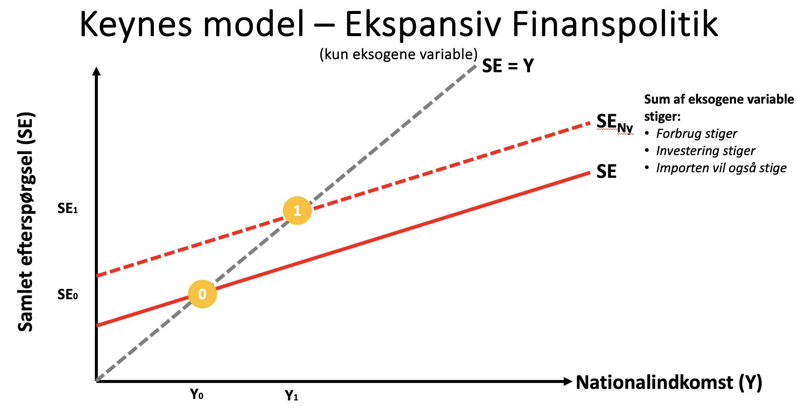
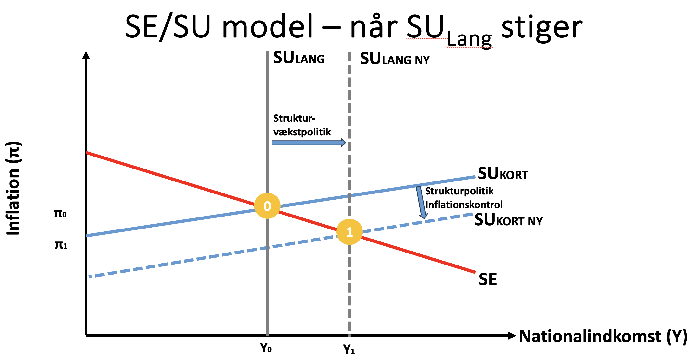

-

Temaprojekt 2 uge 2
Formål:
Løsningsforslag
Formålet med temaprojektet er at give dig kompetence i at bruge, hvad ud har lært i denne uge, i praksis.
Beskrivelse:
I skal læse introen til temaprojektet herunder, før I går i gang med opgaverne.
OLA 2 Intro -
Malene og Makro
Case: EDC Living i Dragør og Makroøkonomi
Malene Harrild vi tidligere har mødt er en erfaren ejendomsmægler og den drivende kraft bag EDC Living i Dragør.
Malene har tidligere indhentet nøgletal for dansk økonomi og vil gerne have et overblik over hvilke økonomiske politikker der kunne tænkes iværksat i 2025.
Afsender:
Et team af eksterne rådgivere, I er eksperter indenfor makroøkonomi.
Modtager:
Malene Harrild fra EDC Living
Man må ikke kontakte virksomheden, i forbindelse med dette projekt.
Makroøkonomi - teori og beskrivelse -
Opgave 1
Dansk økonomi
Besvar de følgende spørgsmål baseret på nedenstående 2024 og 2025 nøgletal for dansk økonomi. Spørgsmålene ønskes besvaret med fokus på tænkelige økonomiske politik-tiltag.
A. Hvordan vil den forventede stigning i BNP-væksten fra 0,9% (2024) til 1,8% (2025) påvirke mulighederne for konjunkturpolitik?
Løsningsforslag:
Den stigende BNP-vækst indikerer, at økonomien accelererer, hvilket reducerer behovet for ekspansiv konjunkturpolitik (f.eks. øget offentligt forbrug eller skattelettelser). En højere vækst kan dog også skabe inflationstryk, hvilket kræver en mere afdæmpet finanspolitik.
Hvis væksten i 2025 overgår prognosen, kan regeringen have mere råderum til at reducere gæld eller investere i langsigtede projekter. Derimod, hvis væksten svækkes, kan ekspansive tiltag som f.eks. infrastrukturinvesteringer blive nødvendige for at stimulere efterspørgslen.
B. Bør Danmark føre en ekspansiv pengepolitik for at støtte økonomien i 2024–2025?
Løsningsforslag:
Nej.
Danmark har en fastkurspolitik over for euroen, hvilket betyder, at Nationalbanken er forpligtet til at følge ECB’s rentepolitik for at sikre valutastabilitet. Dermed kan Danmark ikke selvstændigt sænke renterne for at føre en ekspansiv pengepolitik.
Enhver renteændring afhænger af ECB’s beslutninger. Dette begrænser danske myndigheders mulighed for at bruge pengepolitikken til at håndtere konjunktursvingninger.
C. Hvilke konjunkturtiltag kan regeringen iverksætte, hvis arbejdsløsheden stiger til 7% i 2025?
Løsningsforslag:
En stigning i arbejdsløsheden til 7% (fra 5,8%) ville kræve ekspansive konjunkturtiltag:
Øget offentligt forbrug: Investering i infrastruktur eller grøn energi for at skabe jobs.
Tidligere pensionering eller uddannelsesprogrammer: For at reducere arbejdsstyrken og øge kvalifikationer.
Skattelettelser til husstande: For at øge forbrugerefterspørgslen.
Dog skal tiltagene afvejes mod risikoen for at øge den offentlige gæld (forventet at falde til 28,3% af BNP i 2025), hvilket kan begrænse handlefriheden.
D. Hvad betyder det for strukturpolitikken, at den offentlige gæld forventes at falde fra 33,6% til 28,3% af BNP?
Løsningsforslag:
Et fald i den offentlige gæld giver større finanspolitisk buffer til langsigtede strukturreformer. Regeringen kan prioritere investeringer i områder som digitalisering, grøn omstilling eller uddannelse for at øge produktiviteten.
En lavere gæld reducerer også renteudgifterne, hvilket frigør midler til reformer.
Strukturpolitikken bør fokusere på at styrke arbejdsudbuddet (f.eks. ved at øge pensionsalderen) eller teknologisk innovation for at sikre bæredygtig vækst.
E. CO2-udledningen forventes at falde fra 41,6 millioner ton (2024) til 40,2 millioner ton (2025).
Hvordan kan dette påvirke den danske strukturpolitik, og hvilke udfordringer kan opstå, hvis faldet er mindre end forventet?
Løsningsforslag:
Et fald i CO2-udledningen understøtter Danmarks mål om klimaneutralitet og viser fremgang i den grønne omstilling. Strukturpolitikken bør:
Prioritere grøn infrastruktur: Investering i vedvarende energi og elektrificering af transport.
Stramme kvoter for udledning: For at presse industrien mod bæredygtige løsninger.
Hvis faldet udebliver (f.eks. på grund af højere industriproduktion eller forsinket energiovergang), kan det:
Kræve ekstra offentlige midler: Til kompensation via CO2-afgifter eller subsidier til grøn teknologi.
Nøgletal 2024 2025 Enhed BNP (nominelt) 3.020 mia. kr. 3.120 mia. kr. DKK BNP-vækst (reel fratrukket inflation) 0,9% 1,8% Procent Inflation (kerne) 1,5% 1,9% Procent Arbejdsløshed 5,8% 5,8% Procent Offentlig gæld 33,6% 28,3% % af BNP Handelsbalanceoverskud 46.900 mio. 40.000 mio. DKK Eksport (medicin) +50% +15% Vækst Private investeringer 1,2% 2,5% Procent Statsfinansieringsbehov 45 mia. 82 mia. DKK Reallønnsvækst 4,8% 3,5% Procent CO2-udledning 41.674.000 ton 40.200.000 ton Ton Begreb Forklaring BNP (nominelt) Samlet værdi af alle varer og tjenester produceret i Danmark i løbet af et år BNP-vækst Hvor meget økonomien vokser i forhold til året før (justeret for inflation) Inflation (kerne) Prisstigninger på varer/tjenester, uden energi og mad (som svinger meget)
Eksempel: Tandlæge regningen stiger fra 1000 DKK til 1019 DKKOffentlig gæld Hvor meget staten skylder sammenlignet med hele Danmarks økonomi (BNP) Handelsbalanceoverskud Danmark sælger mere til udlandet end vi køber (overskud i milliarder) Eksport (medicin) Danske medicinproducenters salg til udlandet (fx Novo Nordisk) Private investeringer Penge virksomheder bruger på maskiner, bygninger og teknologi Statsfinansieringsbehov Hvor mange penge staten skal låne for at dække sine udgifter Reallønnsvækst Lønstigninger efter at have trukket inflation fra (købekraft) CO2-udledning Samlet udledning af drivhusgasser fra energi, transport og industri Kilde Rolle Dækning Link Danmarks Statistik (DST) Primær kilde til officielle danske data BNP, inflation, arbejdsløshed, nationalregnskab dst.dk EU-Kommissionen Økonomiske prognoser for EU Vækst, gæld, inflation i dansk kontekst EU Economy Danmarks Nationalbank Pengepolitik og finansielle data Renter, statsgæld, valutareserver nationalbanken.dk Verdensbanken Global benchmarking BNP i USD, historiske tendenser data.worldbank.org Trading Economics Prognoser og markedsdata Realtidsøkonomiske indikatorer tradingeconomics.com Energistyrelsen Energi- og CO₂-data Udledninger, vedvarende energi ens.dk -
Opgave 2
Figur
-
Forklar kort hvad nedenstående figur viser.

Løsningsforslag:
Forklaring af Keynes model med ekspansiv finanspolitik
Denne figur illustrerer Keynes' model og hvordan ekspansiv finanspolitik kan påvirke samfundsøkonomien. Modellen viser sammenhængen mellem den samlede efterspørgsel (SE) og nationalindkomsten (Y) og hvordan en ændring i de eksogene variabler kan skabe vækst.
Forklaring af kurver og punkter:
- SE (Samlet Efterspørgsel): Den røde linje viser den samlede efterspørgsel i økonomien ved et givent niveau af offentlige udgifter, skatter, eksport etc. Den viser hvordan efterspørgslen stiger i takt med stigende nationalindkomst, da folk bruger flere penge når de tjener mere.
- SENy (Ny Samlet Efterspørgsel): Den røde stiplede linje viser en ny samlet efterspørgselskurve efter ekspansiv finanspolitik.
- SE = Y (45-graders linjen): Den grå stiplede linje er ligevægtslinjen hvor nationalindkomst (Y) = den samlede efterspørgsel (SE).
- Punkt 0: Den oprindelige ligevægt hvor den samlede efterspørgsel er SE0 og nationalindkomsten er Y0.
- Punkt 1: Den nye ligevægt hvor den samlede efterspørgsel er SE1 og nationalindkomsten er Y1.
Udviklingen:
- Ekspansiv finanspolitik: Figuren viser, hvordan en ekspansiv finanspolitik kan øge efterspørgslen i samfundet. Dette kan fx ske ved at:
- Offentlige udgifter øges.
- Skatten sættes ned.
- Overførsler fra det offentlige øges.
- Skift i SE-kurven: Den ekspansive finanspolitik får SE-kurven til at rykke opad (rød stiplet linje), fordi den samlede efterspørgsel stiger.
- Ny ligevægt: Den nye ligevægt opstår hvor den nye efterspørgselskurve (SENy) skærer 45-graders linjen. Her er Y steget fra Y0 til Y1.
- Øgede indkomster: Den stigning der ses i nationalindkomst skyldes primært en større efterspørgsel, der igen giver virksomheder grundlag for at producere mere og ansætte flere.
- Multiplikatorvirkning: Det skal nævnes at det ikke kun er de penge som det offentlige bruger der påvirker økonomien, da der opstår en multiplikatoreffekt som følge af den øgede efterspørgsel og indtjening i samfundet. Det ses som en større stigning i nationalindkomsten.
Eksogene og endogene variable:
- Eksogene variable: De eksogene variabler er de faktorer der påvirker efterspørgslen (SE), der ikke bestemmes inden for modellen. Det er variable som fx offentlige udgifter, skatter, eksport og impulser fra udlandet.
- Endogene variable: De endogene variable er de faktorer der bestemmes af de eksogene variabler inden for modellen. Et eksempel på dette er nationalindkomsten (Y) som bestemmes af SE-kurven og ligevægtslinjen (SE=Y)
Keynes' model illustrerer hvordan man gennem ekspansiv finanspolitik kan stimulere efterspørgslen og skabe økonomisk vækst, særligt i en periode hvor der ikke er nok efterspørgsel. Det viser også at nationalindkomsten (Y) er en endogen variabel, da den afhænger af den samlede efterspørgsel der er en ekzogen variabel.
-
Forklar kort hvad nedenstående figur viser.
-
Opgave 3
Figur
-
Forklar kort hvad nedenstående figur viser.

Løsningsforslag:
Forklaring af SE/SU-modellen med stigende SULang
Figuren illustrerer en SE/SU-model, hvor vi ser på sammenhængen mellem inflation (π) og nationalindkomst (Y). Modellen bruges til at analysere både den kortsigtede og langsigtede økonomiske udvikling.
Forklaring af kurver og punkter:
- SE (Samlet Efterspørgsel): Den røde linje viser den samlede efterspørgsel i økonomien. Den er faldende da lavere inflation normalt giver højere efterspørgsel og omvendt.
- SUKORT (Samlet Udbud kort sigt): Den blå linje viser det kortsigtede udbud. Den er stigende, da virksomheder typisk øger produktionen ved stigende priser.
- SULANG (Samlet Udbud lang sigt): Den grå linje viser det langsigtede udbud. Den er lodret, fordi den repræsenterer den potentielle produktion, som er uafhængig af det nuværende prisniveau.
- Punkt 0: Ligevægtspunktet, hvor SE og SUKORT mødes, og hvor inflationen er π0 og nationalindkomsten er Y0.
- Punkt 1: Den nye langsigtede ligevægt efter stigning i SULANG. Her er inflationen π1 og nationalindkomsten Y1.
Udviklingen:
- Stigning i langsigtet udbud (SULANG): Figuren viser, hvad der sker når det langsigtede udbud stiger (blå pil). Det kan ske som følge af strukturelle reformer der øger produktiviteten i samfundet.
For eksempel: En ny teknologi gør det muligt at producere billigere, eller uddannelsesreformer gør arbejdsstyrken mere produktiv. - Nyt ligevægtspunkt (1): Den stigende SULANG-kurve rykker ligevægten mod højre, til punkt 1. Her får vi en højere nationalindkomst (Y1), da der nu er flere varer og tjenester der produceres, samtidigt opstår et nyt kortsigts udbud, da den nye SULANG-kurve flytter det kortsigtede udbud til en lavere inflation ved samme niveau af produktion.
- Kortsigtet udbud rykkes nedad (SUKORT NY): De øgede strukturelle forhold gør at det langsigtede udbud stiger, hvilket får inflationen til at falde og det kortsigtede udbud til at rykke mod højre og nedad.
- Strukturpolitik og inflationskontrol: I perioden ser vi derfor brug af strukturpolitik der øger SULANG kombineret med inflationskontrol, der rykker SUKORT mod et lavere niveau og ny ligevægt opstår.
Modellen viser hvordan strukturpolitik kan øge den langsigtede produktion og have en stabiliserende effekt på inflationen. Det understreger vigtigheden af, at man ikke kun fokuserer på den kortsigtede økonomiske politik, men også investerer i strukturelle forbedringer, der kan styrke økonomien på længere sigt.
Eksempelvis vil en investering i uddannelse kunne forbedre arbejdsstyrken og dermed hæve den potentielle produktion og skabe langsigtet vækst.
-
Forklar kort hvad nedenstående figur viser.